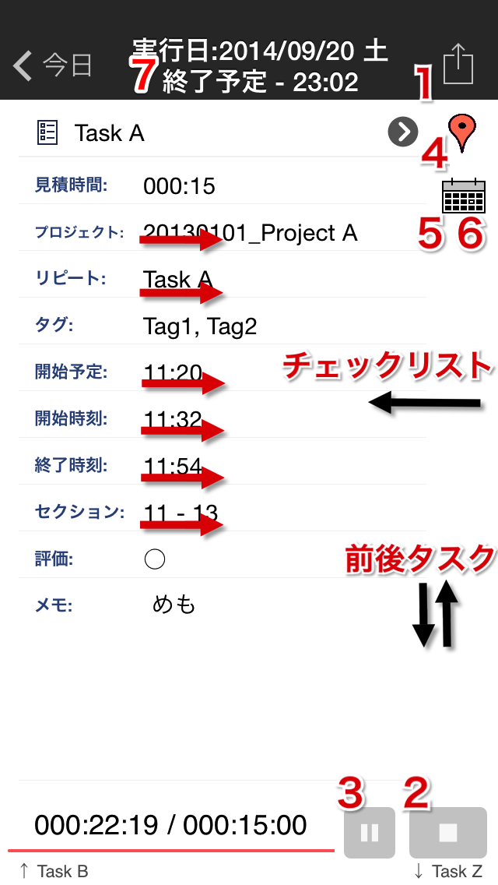
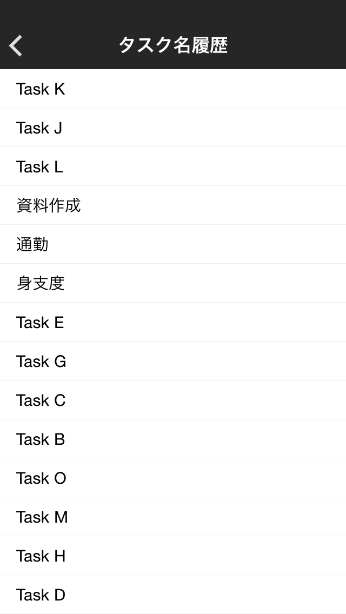
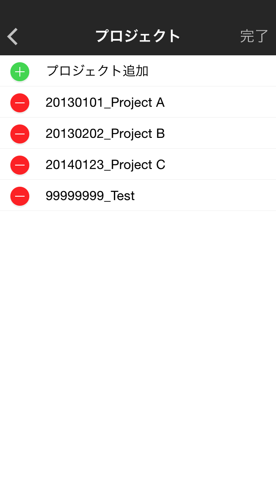
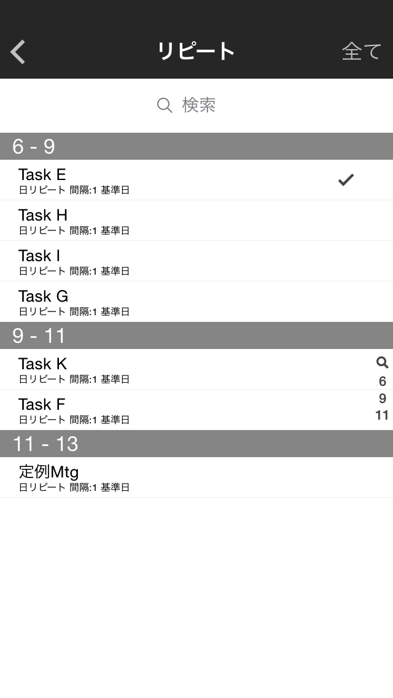
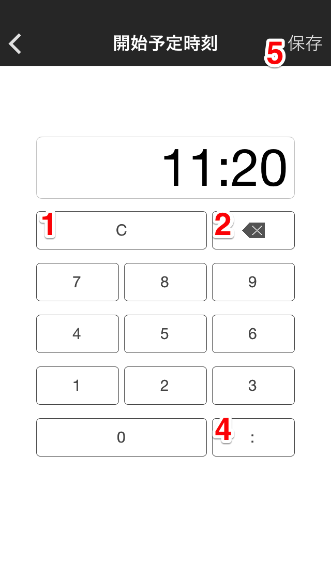
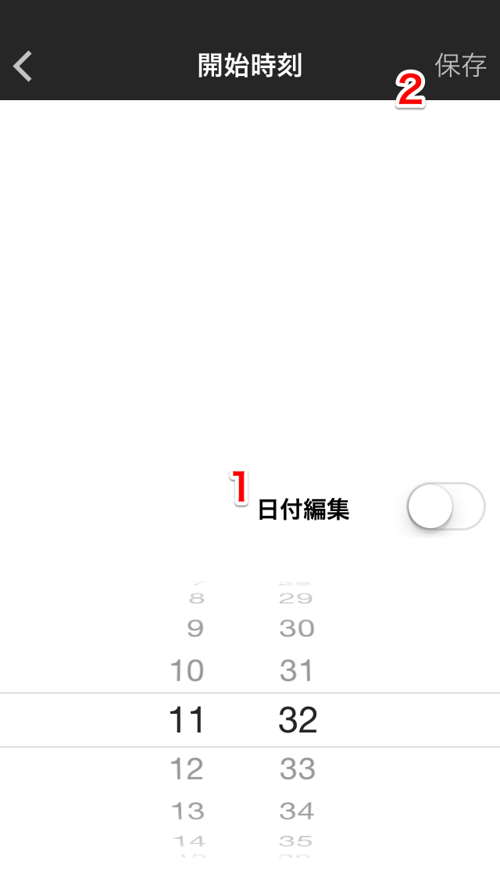
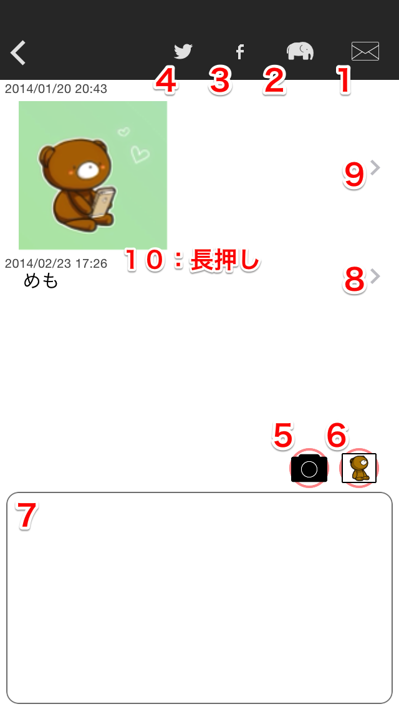

タスク詳細

- タスク名：Task Name（直接編集）
- →タスク名履歴：タスク名フィールドの>ボタン
- →見積時間編集：Estimated
- →プロジェクト編集：Project（スワイプでクリア）
- →リピート編集：Repeat（スワイプでクリア）
- →タグ編集：Tag
- →スケジュール時刻編集：Schedule（スワイプでクリア）
- →開始時刻編集：Start（スワイプでクリア、長押しで直前タスクの終了時刻を開始時刻としてタスク開始。また、時刻編集→保存でタスク開始。）
- →終了時刻編集：End（スワイプでクリア、長押しで見積もり時間通りの実行時間になるようタスク終了。また、時刻編集→保存でタスク終了。）
- →セクション編集：Section（スワイプでクリア）
- タスク評価を編集：Rate
- →メモ編集：Memo
- →チェックリスト：左スワイプorボタンタップ
- →前/次タスク：上下スワイプ
- アクション実行
- タスク削除
- Twitterに送る
- Evernoteに送る
- Mailで送る
- リピートタスクを作成する
- タスクを複製する
- タスク開始・終了
- タスク中断
- →位置情報・チェックイン履歴を表示、編集
- タスク日付を編集
- タスク日付を削除：長押し
- タスクに
- メモ追加：シングルタップ
- 4sq チェックイン追加：ダブルタップ
タスク名履歴

- 過去に開始済みのタスクのうち、リピート設定されていないもののタスク名を表示
- →タスク名を設定して戻る：行選択
見積時間編集

- 見積時間クリア
- 一桁削除
- 各数字入力（0〜9）
- 時間-分区切り入力
※分のみで入力しても時間:分の形式に変換されます。
例：90と入力→1:30
- →保存して戻る
プロジェクト編集

- →プロジェクトを設定して戻る：行選択
- 編集モード切替

- プロジェクト追加：New Project行選択
- プロジェクト名編集：行選択
- プロジェクト削除：削除ボタンタップ
リピート編集

- →リピートタスクを設定して戻る：行選択
- タスク名が空欄の場合は、リピートタスク名が入ります
- 見積時間が未設定の場合は、リピートタスクの見積時間が設定されます
- プロジェクトが未設定の場合は、リピートタスクのプロジェクトが設定されます
- Sectionが未設定の場合は、リピートタスクのSectionが設定されます
- スケジュール時刻が未設定の場合は、リピートタスクのスケジュール時刻が設定されます
- チェックリストに、リピートタスクのチェックリストが追加されます
- メモに、リピートタスクのメモが追加されます
- プロジェクトによるフィルタを切り替える
- →リピート詳細：行ダブルタップ
タグ編集
- タグ設定：Evernoteタグ一覧から選択、または直接入力
- →保存して戻る
スケジュール時刻編集

- スケジュール時刻クリア
- 一桁削除
- 各数字入力
- 時間-分区切り入力
※2桁入力すると、自動入力される
- →保存して戻る
開始時刻編集・終了時刻編集

- 日付表示モードの切替
※Logリスト画面からタスク詳細画面を表示した場合は、日付表示モードで表示されます
- →保存して戻る
セクション編集

- →セクションを設定して戻る：行選択
メモ編集

- Mail送信：メモ選択→Send
- Evernote送信：メモ選択→Send
- Facebook送信：メモ選択→Share
- Twitter送信：メモ選択→Tweet
- 画像メモ追加（カメラ起動）
- 画像メモ追加（ライブラリ）
- ライブラリから選択：シングルタップ
- 最新写真を追加：ダブルタップ
- テキストメモ追加：テキストエリアタップ
- テキストメモ編集：テキストメモ行選択
- →画像フル表示：画像メモ行選択
- メモ日付編集：行長押し
タスク地図
- 各種位置情報表示
- 青ポイント：現在地
- 赤ピン：タスク位置（ドラッグで位置編集可能）
- 緑ピン：foursquareチェックイン位置
- タスク位置を現在地に変更
- 選択したピンを削除
- →タスク詳細に戻る
タスク日付編集
- タスク日付を変更して閉じる
- タスク日付を変更せずに閉じる
- 明日の日付を選択する
→Help Topへ →Taskuma Topへ